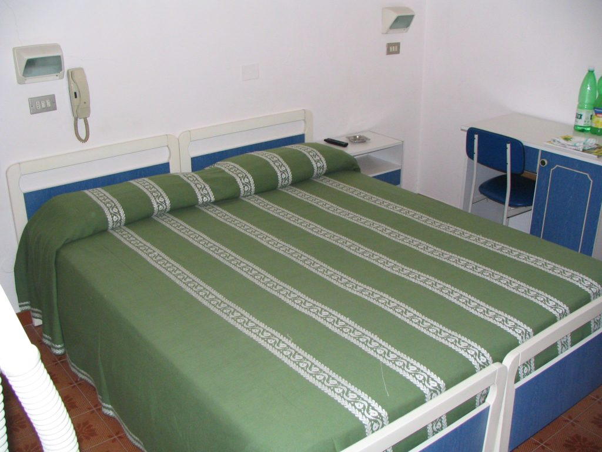

Double room
In Italy double rooms (camere doppie) usually offer two single beds. Most of the time these two beds are connected to create a king-size bed. If a double room has a double bed, this is a queen size bed (letto matrimoniale). Double rooms are always for two people; you will rarely find two double beds as in most American lodgings unless the hotel is part of an international chain. Often, if the party exceeds two people, an extra bed can be added on request. If only one person wants to occupy a double room, many times the owner will charge a slightly lower price. A single room is for one person only and has one single bed (letto singolo). {This is an excerpt from chapter 6 “Hotels and accommodations” of the eBook “Italy from the Inside. A native Italian reveals the secrets of traveling in Italy”. Buy our eBook on Amazon and leave us a review! If it’s good, you’ll make us happy, if it’s bad, you’ll make us improve. Thank you either way!}